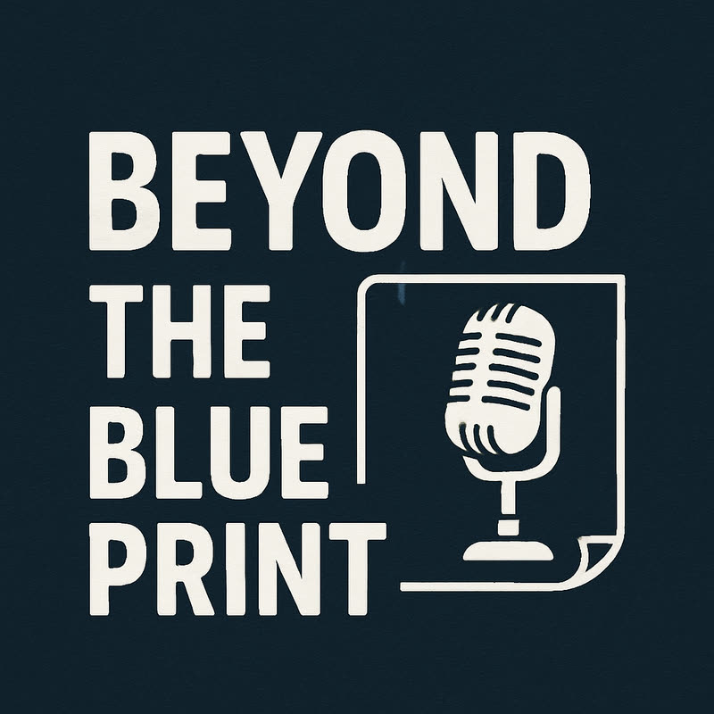

Beyond the Blueprint
Course catalogs never say what engineers actually do all day, so my co-founder Joshua Babalola and I started asking them. We’ve published eight interviews with engineers and scientists from NASA Johnson Space Center, India’s space agency ISRO, Google, Honeywell, Phillips 66 and others.
I built our website in English, French, Spanish and Chinese, using Claude Code as a coding assistant. It has full transcripts and an AI that answers questions using only what guests said. Since July 2026 it has had visitors from 12+ countries, and two students in China recorded our eighth episode on their own.